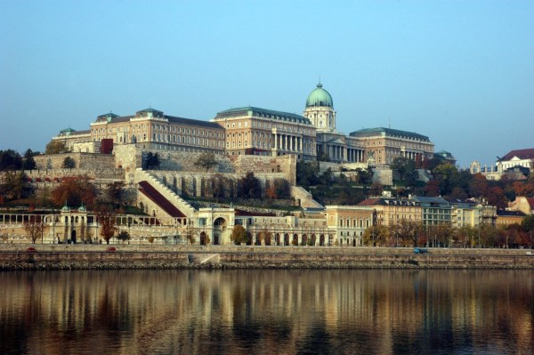
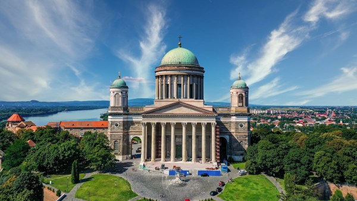
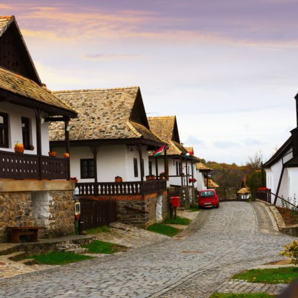
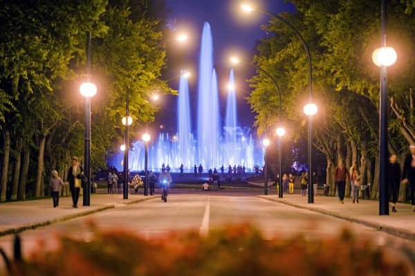
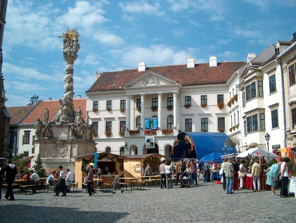
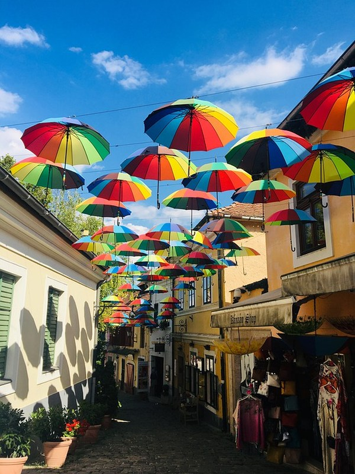
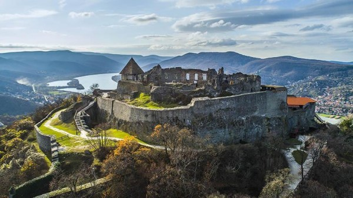

Budai Vár
A 13. századtól adott otthont a magyar királyoknak; ebből a korszakból a középkori falak és néhány épület maradt fenn
10000Ft
Esztergomi Bazilika
Nagyboldogasszony- és Szent Adalbert-főszékesegyház Magyarország legnagyobb egyházi épülete.
7500Ft
Hollókő
Magyarország egyetlen olyan faluja, amely szerepel az UNESCO világörökség listáján, és így világszerte ismert.
4500FT
Margitsziget
A Duna Buda és Pest közötti részén elterülő, zöldellő Margitsziget nyugodt oázis a városban.
2000FT
Sopron
Magyarország egyik legrégebbi városa, a határhoz való közelsége miatt pedig kapcsolatot teremt hazánk és nyugati szomszédunk, Ausztria között.
5000FT
Szentendre
Elsősorban művészetével és kultúrájával ragadja magával a látogatókat.
4000Ft
Visegrád
Izgalmas programok, kultúra, látnivalók az év minden napján.
6400Ft